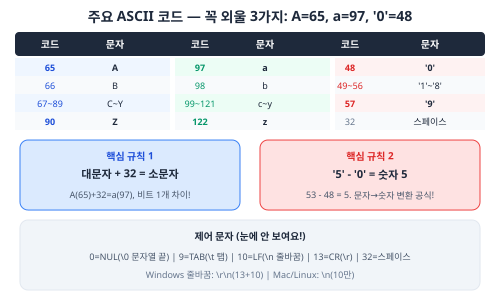
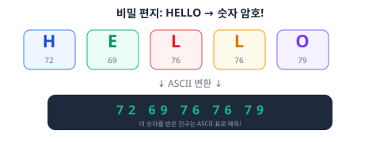

문자도 숫자야 (ASCII)
📚 이번에 배울 것
- 컴퓨터가 문자를 숫자로 저장한다는 걸 이해해요.
- 주요 ASCII 코드를 알아요 (A=65, a=97, '0'=48).
- 대문자와 소문자의 관계를 알아요 (+32).
- 제어 문자의 종류와 역할을 알아요.
- [심화] 확장 ASCII와 코드페이지를 이해해요.
- [심화] 유니코드의 등장 배경과 UTF-8 인코딩 원리를 알아요.
- [심화 내용] 문자 인코딩 체계 전반을 이해하고 실무 문제를 해결해요.
✅ 시작 전 체크
- 2진수와 진법 변환을 할 수 있다 (U0-04, U0-05)
- 1바이트 = 8비트 = 256가지를 안다 (U0-03)
컴퓨터에 문자는 없다

컴퓨터는 0과 1밖에 모르는 기계예요. 글자, 그림, 소리 — 전부 숫자로 바꿔서 저장해요. 그러면 글자는 어떤 숫자로 저장할까요?
1960년대에 미국 사람들이 모여서 약속을 정했어요. 'A는 65번, B는 66번, a는 97번...' 이런 식으로요. 이 약속표의 이름이 ASCII(아스키)예요.
미국 정보 교환 표준 부호. 128개의 문자에 0~127번까지 번호를 매긴 약속표예요.
영어 알파벳, 숫자, 기호, 그리고 눈에 안 보이는 제어 문자까지 포함해요.
7비트(0~127)로 설계한 이유는? 당시 통신 장비가 7비트 단위로 데이터를 보냈기 때문이에요. 나머지 1비트는 패리티 비트(오류 검출용)로 썼어요.
ASCII 코드표: 꼭 알아야 할 것들


ASCII 128문자 전체 구조
ASCII 코드 0~127번을 크게 네 그룹으로 나눌 수 있어요.
| 범위 | 개수 | 종류 | 예시 |
|---|---|---|---|
| 0~31 | 32개 | 제어 문자 | \n(10), \t(9), \0(0) |
| 32~47, 58~64, 91~96, 123~126 | 33개 | 기호/구두점 | ! @ # $ % ^ & * ( ) |
| 48~57 | 10개 | 숫자 문자 | '0'~'9' |
| 65~90, 97~122 | 52개 | 영문자 | A~Z, a~z |
| 127 | 1개 | 삭제 | DEL (Delete) |
제어 문자: 눈에 안 보이는 문자들
0~31번은 제어 문자(Control Character)예요. 화면에 표시되지 않고, 컴퓨터에게 특별한 명령을 내리는 역할을 해요.
| 코드 | 약자 | 이름 | 역할 | C 표기 |
|---|---|---|---|---|
| 0 | NUL | Null | 문자열의 끝 표시 | \0 |
| 7 | BEL | Bell | 경고음 (삐 소리) | \a |
| 8 | BS | Backspace | 커서 한 칸 뒤로 | \b |
| 9 | HT | Horizontal Tab | 탭 (칸 이동) | \t |
| 10 | LF | Line Feed | 줄바꿈 (Unix) | \n |
| 13 | CR | Carriage Return | 커서를 맨 앞으로 | \r |
| 27 | ESC | Escape | 이스케이프 시퀀스 시작 | \e |
Mac/Linux에서는 \n (LF, 10) 하나만 저장돼요.
이 차이 때문에 윈도우에서 만든 텍스트 파일을 리눅스에서 열면 이상한 문자가 보일 수 있어요!
1. 캐리지 리턴(CR) — 글쓰는 머리를 줄 맨 앞으로 옮기기
2. 라인 피드(LF) — 종이를 한 줄 위로 올리기
이 타자기 시절의 개념이 컴퓨터에 그대로 남아있는 거예요!
대문자 + 32 = 소문자
ASCII 코드표를 자세히 보면 재미있는 규칙이 있어요. 대문자 A는 65, 소문자 a는 97이에요. 차이가 얼마인지 계산해 볼까요?
97 - 65 = 32. B(66)와 b(98)의 차이도 32. C(67)와 c(99)도 32. 모든 알파벳이 딱 32 차이가 나요!
| 1 | // 비트 연산으로 대소문자 변환 |
| 2 | char upper = 'A'; // 01000001 |
| 3 | char lower = upper | 0x20; // 01100001 = 'a' |
| 4 | char back = lower & ~0x20; // 01000001 = 'A' |
| 5 | char toggle = upper ^ 0x20; // 01100001 = 'a' |
| 6 | |
| 7 | printf("%c → %c\n", upper, lower); // A → a |
| 8 | printf("%c → %c\n", lower, back); // a → A |
숫자 5와 문자 '5'는 다르다
헷갈리기 쉬운 부분이에요. 숫자 5와 문자 '5'는 완전히 달라요.
숫자 5는 진짜 5예요. 계산할 수 있는 값이에요. 하지만 문자 '5'는 ASCII 코드 53으로 저장돼요. 컴퓨터한테 '5'는 그냥 53번 기호일 뿐이에요.
문자 '5'에서 진짜 숫자 5를 얻으려면? '5' - '0' = 53 - 48 = 5
이건 나중에 C언어에서 정말 자주 쓰는 기법이에요!
| 표현 | 메모리 저장 값 | 타입 | 용도 |
|---|---|---|---|
| 5 | 00000101 (5) | int | 계산에 사용 |
| '5' | 00110101 (53) | char | 화면에 '5' 표시 |
| "5" | 00110101 00000000 (53, 0) | char[] | 문자열 (끝에 \0) |
C언어에서 문자 다루기

| 1 | #include <stdio.h> |
| 2 | |
| 3 | int main(void) { |
| 4 | char ch = 'A'; |
| 5 | printf("문자: %c\n", ch); // A |
| 6 | printf("숫자: %d\n", ch); // 65 |
| 7 | printf("16진수: %x\n", ch); // 41 |
| 8 | |
| 9 | // 숫자로 문자 만들기 |
| 10 | char ch2 = 65; |
| 11 | printf("%c\n", ch2); // A |
| 12 | |
| 13 | // 대문자 → 소문자 |
| 14 | char lower = ch + 32; |
| 15 | printf("%c\n", lower); // a |
| 16 | |
| 17 | return 0; |
| 18 | } |
char ch = 'A'; 라고 쓰면, 사실 ch에는 숫자 65가 들어가요.
대문자를 소문자로 바꾸려면 ch + 32를 하면 돼요.
이런 게 가능한 이유가 바로 ASCII 때문이에요!
인쇄 가능 문자 vs 인쇄 불가능 문자
ASCII 128개 중 화면에 보이는 문자는 95개(32~126)이고, 나머지 33개(0~31, 127)는 제어 문자예요. 스페이스(32)는 인쇄 가능 문자 중 첫 번째예요.
| 1 | #include <stdio.h> |
| 2 | #include <ctype.h> |
| 3 | |
| 4 | int main(void) { |
| 5 | for (int i = 0; i < 128; i++) { |
| 6 | if (isprint(i)) { |
| 7 | printf("%3d: '%c' ", i, i); |
| 8 | } |
| 9 | } |
| 10 | return 0; |
| 11 | } |
활동: 비밀 편지 만들기
ASCII 코드를 이용하면 친구에게 비밀 편지를 보낼 수 있어요. 글자를 숫자로 바꿔서 보내면, ASCII 표를 아는 사람만 읽을 수 있어요!

2. 각 글자를 ASCII 코드로 바꾸세요
3. 숫자만 적어서 친구에게 보내세요
4. 친구는 ASCII 표를 보고 해독!
심화: 각 숫자에 1을 더해서 보내면 더 어려운 암호가 돼요 (시저 암호)
[심화] 시저 암호와 ROT13
비밀 편지를 더 안전하게 만들고 싶으면? 각 문자의 ASCII 코드에 일정한 수를 더하면 돼요. 이걸 시저 암호(Caesar Cipher)라고 해요. 로마의 율리우스 카이사르가 군사 비밀 통신에 실제로 사용했어요!
| 1 | #include <stdio.h> |
| 2 | |
| 3 | // 시저 암호: 알파벳을 shift만큼 밀기 |
| 4 | void caesar_encrypt(char *text, int shift) { |
| 5 | for (int i = 0; text[i]; i++) { |
| 6 | if (text[i] >= 'A' && text[i] <= 'Z') { |
| 7 | text[i] = (text[i] - 'A' + shift) % 26 + 'A'; |
| 8 | } else if (text[i] >= 'a' && text[i] <= 'z') { |
| 9 | text[i] = (text[i] - 'a' + shift) % 26 + 'a'; |
| 10 | } |
| 11 | } |
| 12 | } |
| 13 | |
| 14 | int main(void) { |
| 15 | char msg[] = "HELLO"; |
| 16 | printf("원문: %s\n", msg); |
| 17 | caesar_encrypt(msg, 3); |
| 18 | printf("암호: %s\n", msg); // KHOOR |
| 19 | caesar_encrypt(msg, 23); // 26-3 = 23으로 복호화 |
| 20 | printf("복호: %s\n", msg); // HELLO |
| 21 | return 0; |
| 22 | } |
[심화] 확장 ASCII (Extended ASCII)
기본 ASCII는 7비트(0~127)로 128개 문자만 표현해요. 영어와 기본 기호만 가능하죠. 그런데 1바이트는 8비트니까 256개까지 가능해요. 128~255번에 추가 문자를 넣은 것이 확장 ASCII예요.
- CP437: IBM PC (선 그리기 문자, ░▒▓)
- ISO 8859-1 (Latin-1): 서유럽 (ñ, ü, ß)
- Windows-1252: 마이크로소프트
같은 번호가 프로그램마다 다른 문자로 보이는 혼란이 생겼어요.
[심화] 한글은 어떻게? — 코드페이지의 세계
한글은 글자 수가 엄청 많아요. 자음 14개, 모음 10개를 조합하면 수천 개의 글자가 가능해요. 1바이트(256개)로는 턱없이 부족하죠.
| 인코딩 | 연도 | 방식 | 특징 |
|---|---|---|---|
| 조합형 | 1980s | 자모 조합 | 초성+중성+종성 코드 조합 |
| 완성형 (KSC5601) | 1987 | 완성된 글자마다 코드 | 2,350자만 포함 (뷁 등 없음) |
| EUC-KR | 1990s | KSC5601 + ASCII | 리눅스/인터넷 초기 |
| CP949 (MS949) | 1990s | EUC-KR 확장 | 윈도우 한글, 11,172자 모두 포함 |
| UTF-8 | 1993~ | 유니코드 가변 길이 | 현재 표준, 전 세계 문자 지원 |
[심화] 유니코드 — 세계 문자 통합의 꿈
나라마다 다른 코드페이지를 쓰다 보니, 일본어 이메일이 한국 컴퓨터에서 깨지고, 아랍어 웹사이트가 물음표 투성이로 보이는 문제가 생겼어요. 1991년, 유니코드(Unicode)라는 '세계 단일 문자 코드'가 등장해요.
- U+0041 = A (영어)
- U+AC00 = 가 (한글)
- U+1F600 = 😀 (이모지)
현재 15만 자 이상, 150개 이상의 문자 체계를 포함해요.
| 평면 | 범위 | 이름 | 내용 |
|---|---|---|---|
| BMP (0번) | U+0000~U+FFFF | 기본 다국어 평면 | 대부분의 실용 문자 |
| SMP (1번) | U+10000~U+1FFFF | 보조 다국어 평면 | 이모지, 고대 문자 |
| SIP (2번) | U+20000~U+2FFFF | 보조 표의 평면 | 한자 확장 |
| 3~13번 | - | 미배정 | 미래 사용 |
| 14번 | U+E0000~U+EFFFF | 보조 특수 목적 | 태그, 변형 선택자 |
| 15~16번 | - | 사용자 정의 | 개인 용도 |
[심화] UTF-8 인코딩 — 가변 길이의 마법
유니코드는 번호(코드 포인트)만 정한 거고, 실제 컴퓨터에 어떻게 저장할지는 인코딩(encoding)이 결정해요. 가장 널리 쓰이는 인코딩이 UTF-8이에요.
| 코드 포인트 범위 | 바이트 수 | 바이트 패턴 | 예시 |
|---|---|---|---|
| U+0000~U+007F | 1바이트 | 0xxxxxxx | A(41) → 0x41 (ASCII와 동일!) |
| U+0080~U+07FF | 2바이트 | 110xxxxx 10xxxxxx | ñ(F1) → 0xC3 0xB1 |
| U+0800~U+FFFF | 3바이트 | 1110xxxx 10xxxxxx 10xxxxxx | 가(AC00) → 0xEA 0xB0 0x80 |
| U+10000~U+10FFFF | 4바이트 | 11110xxx 10xxxxxx 10xxxxxx 10xxxxxx | 😀(1F600) → 0xF0 0x9F 0x98 0x80 |
2. 자기 동기화 — 어디서 읽기 시작해도 글자 경계를 찾을 수 있음
3. 효율적 — 영어 1바이트, 한글 3바이트 (고정 4바이트보다 절약)
4. 바이트 순서 무관 — 엔디안 문제 없음
[심화] UTF-16과 UTF-32
[심화] 서로게이트 페어 (UTF-16)
UTF-16에서 BMP(U+0000~U+FFFF)는 2바이트로 직접 표현해요. 하지만 이모지(U+1F600 등)는 BMP 밖이라 2바이트로 안 돼요. 이때 서로게이트 페어(Surrogate Pair)를 써요.
[심화] 이모지와 유니코드
이모지(Emoji)는 원래 1999년 일본 휴대폰 회사(NTT 도코모)에서 만들었어요. 2010년 유니코드 6.0에 공식 편입됐고, 지금은 3,600개 이상의 이모지가 있어요.
👨 + ZWJ + 👩 + ZWJ + 👧 + ZWJ + 👦
ZWJ(U+200D) = Zero Width Joiner (보이지 않는 연결 문자)
피부색도 코드 포인트 조합: 👋 + 🏻 = 👋🏻
[심화 내용] C언어의 문자 처리 심화
C언어에서 char는 보통 1바이트(8비트)예요. signed char(-128~127) 또는 unsigned char(0~255)인데, 기본 char가 signed인지 unsigned인지는 구현 정의(implementation-defined)예요.
| 1 | #include <stdio.h> |
| 2 | #include <limits.h> |
| 3 | |
| 4 | int main(void) { |
| 5 | printf("char 크기: %zu 바이트\n", sizeof(char)); // 항상 1 |
| 6 | printf("CHAR_MIN: %d\n", CHAR_MIN); // 0 or -128 |
| 7 | printf("CHAR_MAX: %d\n", CHAR_MAX); // 127 or 255 |
| 8 | |
| 9 | // char는 정수 타입! 산술 연산 가능 |
| 10 | char ch = 'A' + 1; // 'B' |
| 11 | printf("%c\n", ch); |
| 12 | |
| 13 | // 문자 분류 함수 (ctype.h) |
| 14 | // isalpha, isdigit, isupper, islower, isspace, isprint ... |
| 15 | |
| 16 | return 0; |
| 17 | } |
char에 128 이상의 값을 저장하면 플랫폼마다 다르게 동작할 수 있어요.
이식 가능한 코드를 쓰려면 unsigned char 또는 signed char를 명시하세요.
바이트 배열에는 항상 unsigned char (또는 C99의 uint8_t)를 쓰세요.
[심화 내용] wchar_t와 다중 바이트 문자
C90에서 wchar_t가 추가됐어요. 와이드 문자(wide character)를 저장하는 타입이에요. 하지만 크기가 플랫폼마다 달라요 — Windows에서 2바이트(UTF-16), Linux에서 4바이트(UTF-32).
| 1 | #include <stdio.h> |
| 2 | #include <wchar.h> |
| 3 | #include <locale.h> |
| 4 | |
| 5 | int main(void) { |
| 6 | setlocale(LC_ALL, ""); |
| 7 | |
| 8 | wchar_t korean = L'가'; // 유니코드 U+AC00 |
| 9 | wprintf(L"문자: %lc\n", korean); |
| 10 | wprintf(L"코드: U+%04X\n", korean); |
| 11 | wprintf(L"wchar_t 크기: %zu 바이트\n", sizeof(wchar_t)); |
| 12 | |
| 13 | // 와이드 문자열 |
| 14 | wchar_t greeting[] = L"안녕하세요"; |
| 15 | wprintf(L"문자열: %ls\n", greeting); |
| 16 | wprintf(L"길이: %zu\n", wcslen(greeting)); // 5 |
| 17 | |
| 18 | return 0; |
| 19 | } |
[심화 내용] 모지바케 (文字化け) — 글자 깨짐
일본어로 '문자가 변한다'는 뜻의 모지바케. 파일의 인코딩과 읽는 프로그램의 인코딩 설정이 다를 때 발생해요.
| 원본 | 원본 인코딩 | 잘못 읽은 인코딩 | 결과 |
|---|---|---|---|
| 한글 | UTF-8 (3바이트) | EUC-KR (2바이트) | "ÇѱÛ"처럼 보임 |
| café | UTF-8 | Latin-1 | "café"로 보임 |
| 日本語 | Shift-JIS | UTF-8 | "?{?語"로 보임 |
2. HTTP 헤더에 Content-Type: text/html; charset=utf-8 명시
3. HTML에 <meta charset="utf-8"> 추가
4. 데이터베이스도 UTF-8 (MySQL: utf8mb4)
5. 소스 코드 파일도 UTF-8로 저장
[심화 내용] ASCII 아트와 이스케이프 시퀀스
터미널에서 문자만으로 그림을 그리는 ASCII 아트. 그리고 터미널 색상과 커서를 제어하는 ANSI 이스케이프 시퀀스는 ESC(27번) 문자로 시작해요.
| 1 | #include <stdio.h> |
| 2 | |
| 3 | int main(void) { |
| 4 | // ANSI 이스케이프 시퀀스: \033[ 뒤에 코드 |
| 5 | printf("\033[31m빨간색\033[0m\n"); |
| 6 | printf("\033[32m초록색\033[0m\n"); |
| 7 | printf("\033[1;34m굵은 파란색\033[0m\n"); |
| 8 | printf("\033[43m노란 배경\033[0m\n"); |
| 9 | |
| 10 | // ASCII 아트 |
| 11 | printf("\n /\\_/\\\n"); |
| 12 | printf(" ( o.o )\n"); |
| 13 | printf(" > ^ <\n"); |
| 14 | |
| 15 | return 0; |
| 16 | } |
[심화 내용] 문자열 인코딩 변환 (iconv)
| 1 | #include <stdio.h> |
| 2 | #include <iconv.h> |
| 3 | #include <string.h> |
| 4 | |
| 5 | // UTF-8 → EUC-KR 변환 예시 (Linux) |
| 6 | int main(void) { |
| 7 | iconv_t cd = iconv_open("EUC-KR", "UTF-8"); |
| 8 | if (cd == (iconv_t)-1) { |
| 9 | perror("iconv_open"); |
| 10 | return 1; |
| 11 | } |
| 12 | |
| 13 | char utf8[] = "안녕"; // UTF-8: 6바이트 |
| 14 | char euckr[64]; |
| 15 | char *in = utf8, *out = euckr; |
| 16 | size_t inlen = strlen(utf8), outlen = sizeof(euckr); |
| 17 | |
| 18 | iconv(cd, &in, &inlen, &out, &outlen); |
| 19 | *out = '\0'; |
| 20 | |
| 21 | printf("UTF-8 바이트: %zu\n", strlen(utf8)); // 6 |
| 22 | printf("EUC-KR 바이트: %zu\n", strlen(euckr)); // 4 |
| 23 | |
| 24 | iconv_close(cd); |
| 25 | return 0; |
| 26 | } |
[심화 내용] 면접/실무에서 자주 나오는 문제
UTF-8 3바이트 패턴: 1110xxxx 10xxxxxx 10xxxxxx
상위 4비트: 1010 → 11101010
중간 6비트: 110000 → 10110000
하위 6비트: 000000 → 10000000
결과: 0xEA 0xB0 0x80
UTF-8에서 한글 1글자 = 3바이트이므로
strlen("한글") = 6 (3+3)
실제 글자 수를 세려면 유니코드 라이브러리(ICU 등)가 필요해요.
[심화 내용] 어셈블리에서 문자 처리
| 1 | ; x86-64 어셈블리: 대문자를 소문자로 변환 |
| 2 | ; C: lower = upper | 0x20; |
| 3 | section .text |
| 4 | mov al, 'A' ; AL = 0x41 (65) |
| 5 | or al, 0x20 ; AL = 0x61 (97) = 'a' |
| 6 | ; OR 연산 1번으로 대소문자 변환 완료! |
| 7 | |
| 8 | ; 비교: toupper() 라이브러리 함수는 |
| 9 | ; 로케일 체크 + 범위 체크 + 조건 분기가 필요 |
| 10 | ; 비트 연산이 훨씬 빠름 |
OX 퀴즈
연습문제
문자 'C'의 ASCII 코드는 얼마인가요? (힌트: A=65)
ASCII 코드 100은 어떤 문자인가요? (힌트: a=97)
문자 '0'(숫자 문자 영)의 ASCII 코드는 얼마인가요?
줄바꿈 문자 '\n'의 ASCII 코드는 얼마인가요?
ASCII에서 인쇄 가능한 문자는 총 몇 개인가요? (힌트: 32번~126번)
암호 메시지 '72 73' 를 해독하세요. (힌트: H=72)
대문자 'G'를 소문자로 바꾸려면 ASCII 코드에 얼마를 더해야 하나요? 결과 문자의 ASCII 코드는 얼마인가요?
'HELLO'를 시저 암호(shift=3)로 암호화하면 어떻게 되나요?
비트 연산 ch ^ 0x20은 대문자를 소문자로, 소문자를 대문자로 바꿔줍니다. 'M'(77)에 적용하면 결과는?
Windows에서 만든 텍스트 파일의 줄바꿈이 Linux에서 이상하게 보이는 이유를 설명하세요.
문자 '7'에서 문자 '0'을 빼면 (ASCII 코드끼리 빼기) 결과가 얼마인가요? 왜 그런 결과가 나오는지 설명해 보세요.
[심화] '가'의 유니코드는 U+AC00입니다. 이것을 UTF-8로 인코딩하면 몇 바이트이고, 각 바이트의 16진수 값은?
[심화] strlen("Hello")와 strlen("안녕")의 결과를 각각 구하세요. (UTF-8 환경)
[심화 내용] UTF-16에서 이모지 😀 (U+1F600)의 서로게이트 페어를 계산하세요.
[심화 내용] char가 signed인 시스템에서 (char)200의 값은? unsigned char로 캐스팅하면?
정답
정답
용어 정리
━━━ 10축 심화 학습 ━━━
[KOI] ASCII/문자 인코딩 실전 기출 유형
정답: 67+111+100+101 = 379
풀이:
• C = 67 (A=65, +2)
• o = 111 (a=97, +14)
• d = 100 (a=97, +3)
• e = 101 (a=97, +4)
• 합계 = 379
• 팁: 대문자=65+위치, 소문자=97+위치로 빠르게 계산!
정답:
• F = 70 = 01000110₂
• 0x20 = 32 = 00100000₂
• F | 0x20 = 01100110 = 102 = f
• 6번째 비트(2⁵=32) 하나만 켜면 대문자→소문자!
• 역으로 AND ~0x20으로 끄면 소문자→대문자
정답: 11바이트
풀이:
• H,e,l,l,o = 영어 5글자 × 1바이트 = 5바이트
• 안,녕 = 한글 2글자 × 3바이트 = 6바이트
• 총 = 5+6 = 11바이트
• 주의: strlen()은 글자 수(7)가 아니라 바이트 수(11)를 리턴!
정답: COPME
풀이:
• 복호화: 각 문자에서 5를 빼기 (또는 26-5=21을 더하기)
• H→5자리 뒤로 = C
• T→5 = O, U→5 = P, R→5 = M, J→5 = E
• 결과: COPME
• 팁: 복호화 = shift를 (26-원래shift)로 다시 암호화!
[KOI] 비밀 메시지 '75 79 73'(ASCII 코드 3개)를 해독하세요. 힌트: K=75이에요. 나머지도 계산해 보세요.
[디버깅] 문자 vs 숫자 함정
| 1 | #include <stdio.h> |
| 2 | |
| 3 | int main(void) { |
| 4 | char ch = '5'; |
| 5 | int num = 5; |
| 6 | |
| 7 | printf("'5'의 ASCII 코드: %d\n", ch); // 53! |
| 8 | printf("진짜 숫자 5: %d\n", num); // 5 |
| 9 | printf("같나요? %s\n", (ch == num) ? "같다" : "다르다"); // 다르다! |
| 10 | |
| 11 | // 문자 → 숫자 변환 공식: |
| 12 | int real = ch - '0'; // 53 - 48 = 5 |
| 13 | printf("'5' - '0' = %d\n", real); // 5! |
| 14 | return 0; |
| 15 | } |
[C+디버깅] char ch = '3'; if (ch == 3) 이라고 쓰면 맞을까요? 왜 그런지 설명하고, 올바른 비교 방법을 쓰세요.
[컴퓨팅사고력] ASCII에서 A~Z는 65~90, a~z는 97~122예요. (1) 대문자를 소문자로 바꾸는 3가지 방법을 쓰세요 (+32, OR 0x20, XOR 0x20). (2) 이 중 XOR는 대소문자 '토글' 효과가 있다고 했어요. 'a'(97)에 XOR 0x20을 적용하면? (3) 이 설계가 가능한 이유는 32=2⁵ 때문이에요. 왜 그런지 2진수로 설명하세요.
[디버깅] 숫자 5 vs 문자 '5'(=53) 함정. ch-'0' 변환 공식. 인코딩 깨짐(모지바케) 해결법
[컴퓨팅사고력] 추상화 — 문자를 숫자로 대응. 비트 하나로 대소문자 구분하는 설계
[C언어] char=정수, 'A'+1='B'. printf %c %d %x. signed/unsigned char 차이
[코딩기초] 이스케이프 시퀀스(\n \t \0). ANSI 색상 코드
[실생활] 줄바꿈 차이(Win:\r\n, Linux:\n). 모지바케 해결법(UTF-8로 통일)
[하드웨어] 7비트 설계+패리티 비트. 타자기에서 온 CR/LF
[타과목] 역사 — ASCII 1963년, 한글인코딩 전쟁. 암호학 — 시저암호/ROT13